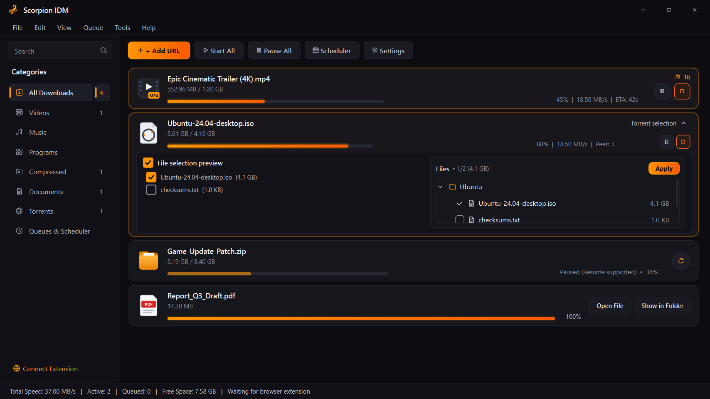
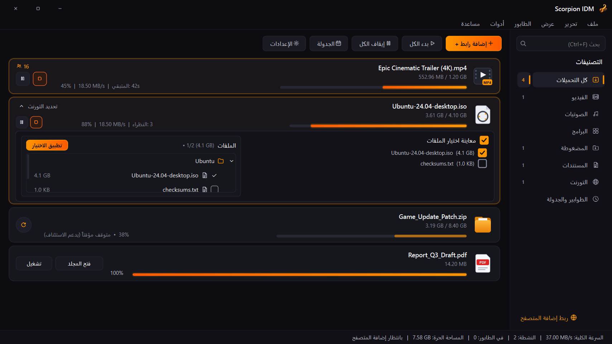

Your downloads in one fast workspace
Split files over parallel connections, pause and resume safely, and capture video from the browser straight to your Windows desktop app.
Download for Windows Windows · v2.1.29
From your browser to the queue
Install the Windows app, then enable the Edge extension. Pick video quality right from the player button and follow progress in real time.
Bilingual English and Arabic interface, queue scheduling, inline torrent file selection, and strict local-only loopback communication.
